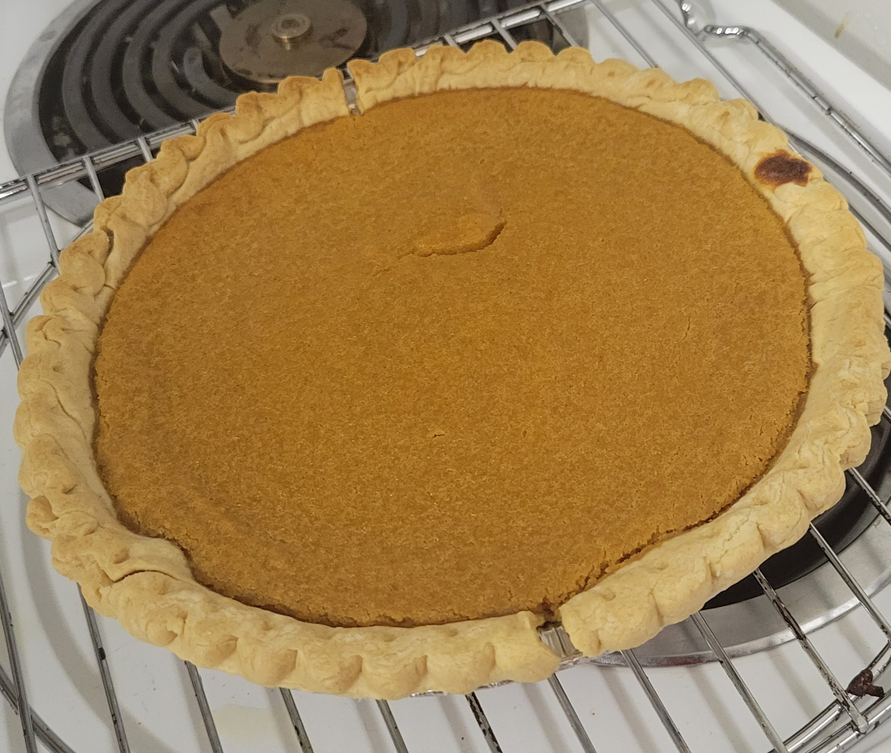

Sweet Potato Pie

Description
A simple southern sweet potato pie recipe. The result is a creamy smooth flavorful pie. It
takes about 2 hours to prepare. Then you just wait for it to cool and enjoy! Let's get started
Ingredients
- 1 lb of sweet potatoes(about 2 cups per pie)
- 1/2 cup butter (softened)
- 1 cup white sugar
- 1/2 cup milk
- 2 eggs (large)
- 1/2 teaspoon ground nutmeg
- 1/2 teaspoon ground cinnamon
- 1 teaspoon vanilla extract
- 1 unbaked pie crust (9-inch)
Steps
- Boil the sweet potatoes whole (with skin on) for 40-50 minutes or until soft. Run cold water over the sweet potatoes and remove the skin (should come off easily by hand.no tools needed)
- Break apart sweet potato in a bowl. Add butter, and mix well (I use a blender). Stir in sugar, milk, eggs, nutmeg, cinnamon, and vanilla. Mix until smooth. Pour filling into an unpaked crust.
- Bake at 350 degrees F (175 degrees C) for 55-60 minutes, or until knife inserted in center comes out clean. Pie will puff up like a souffle, and then sink down as it cools.
- All done! take a picture and let us know how it turned out